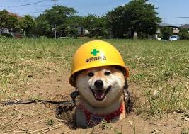

Error Code 404

The meme is based on a 2010 photograph, and became popular in late 2013, being named as Know Your Meme's "top meme" of that year. A cryptocurrency based on Doge, the Dogecoin, was launched in December 2013, and the Shiba Inu has been featured on Josh Wise's NASCAR car as part of a sponsorship deal. Doge has also been referenced by members of the United States Congress, a safety video for Delta Air Lines, a Google Easter egg, and the video for the song "Word Crimes" by "Weird Al" Yankovic.

Doge profesional yang bekerja sebagai arsitek pembangunan

Doge sedang santai setelah kelelahan bekerja
Domestic x Kanojo
ASHIAP